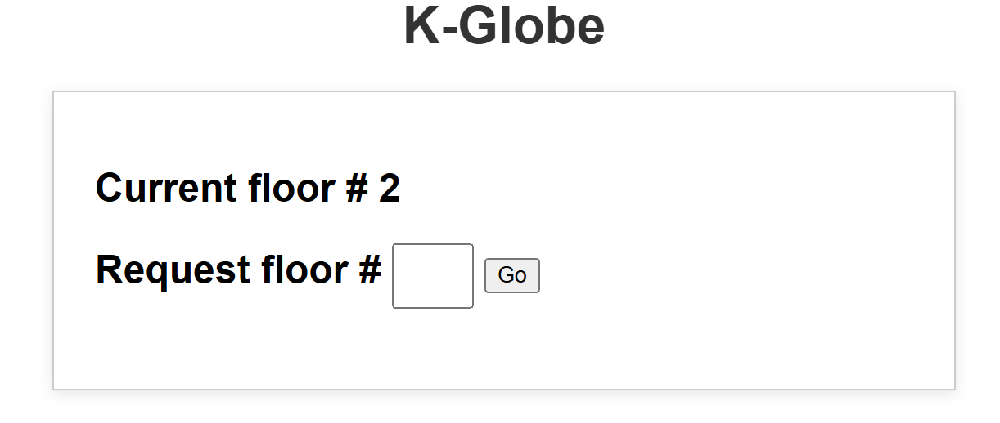

Weekly Log Book 8 - Blake Gergely
Home
About
Prev Pg
Next Pg
- Updated the visuals of the webpage controller
- Attempted to integrate the web control to the main function of the supervisor controller
- implemented queue for CAN messages for the supervisor controller, further debugging is needed
Integration Testing
GUI

Current GUI authentication and database are to be implemented next
Copyright © Blake G.